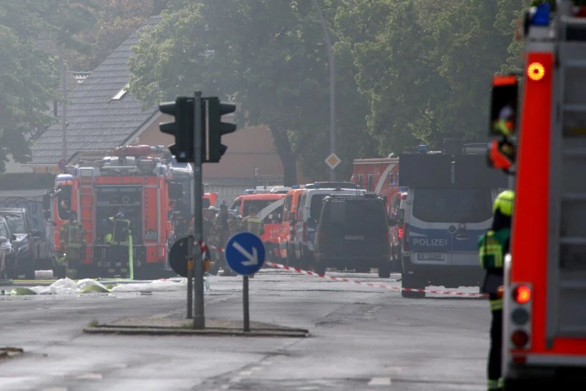

Almanya’nın başkenti Berlin’de kimya fabrikasında yangın çıktı.
IRIS-T füzelerinin üreticisi Diehl Savunma şirketinin kardeş kuruluşu olan Diehl Metal’da kısa sürede
büyüyen yangın nedeniyle gökyüzünü siyah dumanlar kapladı.
İtfaiye ekipleri, fabrikada sülfürik asit ve bakır siyanür depolandığını ve kimyasalların tutuşarak
hidrojen siyanür gazı oluşturabileceğini söyledi. Ölümcül hidrojen siyanür gazı konusunda uyarıda
bulunan ekipler, vatandaşlardan bulundukları ortamda tüm pencereler ile havalandırma ünitelerini
kapatmaları ve dışarı çıkmamaları çağrısında bulundu.
Fabrika yakınında bulunan okul ve işyerleri boşaltıldı. Yangına müdahale için bölgede 190 itfaiye
görevlisi bulunurken, görgü tanıkları olay yerinden patlama sesleri duyulduğunu belirtti.
Berlin İtfaiye Sözcüsü Adrian Wenzel, 4 katı tamamen yanan fabrikanın bir kısmının çöktüğünü belirtti.
Wenzel, “Yangını sadece dışarıdan söndürmeye çalışıyoruz. Yangın artık içeriden kontrol altına
alınmıyor” dedi. Yangının nedenine ilişkin soruşturma başlatıldı.
